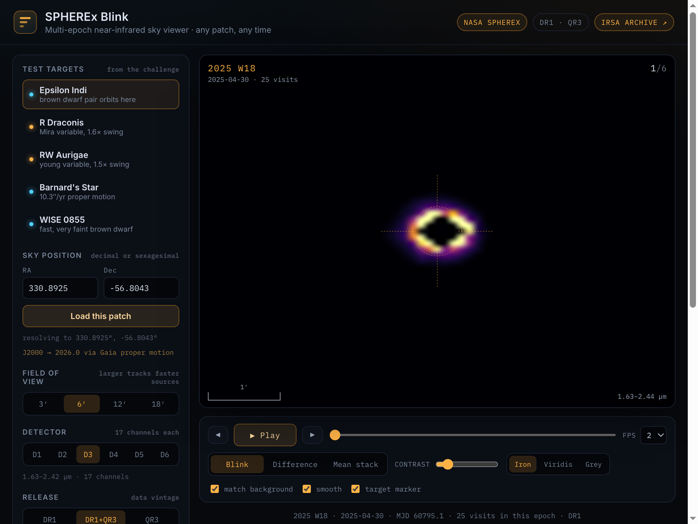
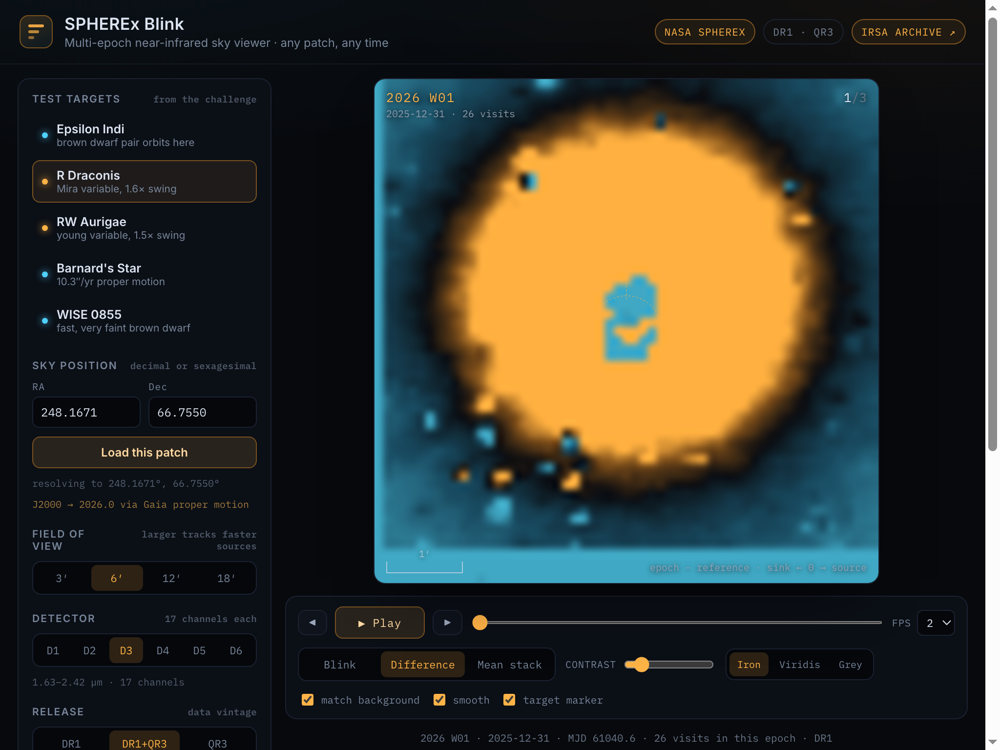

Pick any patch of sky. Watch every epoch NASA's SPHEREx has taken of it. See what moved.
kepleris — Ayushi Upadhyay (solo)
Delhi (virtual)
NASA SPHEREx DR1 & QR3 from IRSA, ESA Gaia DR3
There is no simple public way to say "show me this patch at every epoch, lined up, so I can see what changed." The archive gives you files. It does not give you a view.
What would it take for a volunteer with no astronomy software to spot a moving object?

Epsilon Indi, 6 epochs, 514-day baseline. The ring is the object: SPHEREx saturates on bright stars and masks the core.

R Draconis, epoch minus reference. Warm = brighter now, cool = dimmer.
R Draconis swings 1.6× and Barnard's Star 1.5× across the epochs shown — visible in seconds, from a browser.
Cutouts arrive in the spacecraft's orientation: −163.7° in survey 1, +19.6° in survey 2 at the same field. Blinking raws shows rotation, not motion.
Masked, high-pass Pearson correlation, sub-pixel parabola fit. Frames that fail are reported, not silently shown.
The 3.9 MB PSF table in every cutout is skipped by size arithmetic, and responses are cached — the five targets reload instantly.
Barnard's Star travels 10.3 arcseconds a year. By 2026 its published J2000 position is 4.5 arcminutes away from where SPHEREx actually sees it — almost the entire default field.
So presets carry Gaia DR3 proper motion and are propagated to the observation epoch before the archive is searched. Without that step the tool shows an empty field and the object you asked for is off the edge.
The same check caught two wrong coordinates in our own target list, which were corrected against Gaia before submission.
TypeScript, React and a hand-written FITS reader. No Python, no database, no API keys — IRSA's services are public. Built solo in about a day.
<deployed URL goes here>
SPHEREx spectral images, DR1 and QR3, NASA/IPAC Infrared Science Archive. Gaia DR3 proper motions, ESA.
This publication makes use of data products from the Spectro-Photometer for the History of the Universe, Epoch of Reionization and Ices Explorer (SPHEREx), which is a joint project of the Jet Propulsion Laboratory and the California Institute of Technology, and is funded by the National Aeronautics and Space Administration. This work has made use of data from the European Space Agency (ESA) mission Gaia, processed by the Gaia Data Processing and Analysis Consortium (DPAC). Code and text were developed with AI assistance; see the repository README for the disclosure.